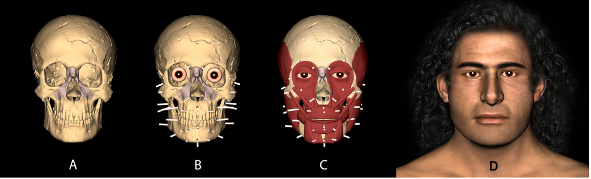

Table of contents |
|---|
| Abstract |
| Introduction |
| What is Photogrammetry? |
| Introduction to UAVs |
| 3D Reconstruction of a Human Face |
| Conclusion |
| References |
Advancements of photogrammetry, computer softwares and Unmanned Aerial Vehicles (UAVs), it is the future of solving cold
cases, involving unidentifiable victims. This article explores the potential of using drone technology to accurately
capture and reform a human face during crime scene investigations and hopefully paving the way for a precise
identification to bring closure to their families and serve justice to the victims. Traditionally, before advanced
technology emerged, forensic investigators would use clay to form the face of the victims, however this would be placed
directly onto their skull, an extremely invasive way to find out their characteristics and probably frowned upon by many
peers in the industry. However, this newer technology provides a non-invasive approach from gathering data all the way
to developing facial features. As technology evolves, new accurate methods would be introduced, such as laser scanning,
to completely eliminate the chance of human error.
Photogrammetry is "the technique of using photographs to ascertain measurements of what is photographed" (Oxford Dictionary, 2023)
, a vital element to solving criminal investigations and decreasing the possibility of cold cases. The
"ascertained measurements" extracted from photographs can then be designed into a computer 3D model, in this case it
gives investigators an insight on the layout of the crime scene from multiple perspectives, perhaps introducing a new
lead in the investigation. Thus, the main form of photogrammetry consists of Micro UAV (Micro Unmanned Aerial
Vehicle)(PS and Jeyan, 2020) technology which allows machinery such as drones to take measurements and scans for you.
Ultimately, launching Micro UAV technology at the crime scene enables the site to be protected from damage and be
preserved whilst the case is still active, and if the case needs to be re-examined in the future (Sazaly, 2022).
Ultimately, there are 5 processes that make up a 3D model using photogrammetry which include data collection, image
alignment, point cloud generation, mesh creation and texturing (Farhadi, 2024). Data is normally collected using cameras
or drones such as Micro UAV to collect a variety of photographs of the scene with 60%- 80% overlapping so that during
the image alignment the software can detect common features across all the images. Thus, in the cloud, a point is
assigned to each part of the image and therefore corresponds to a certain point in the crime scene to make 3D
coordinates. These coordinates are used to create a mesh, once created they apply the photos and should end up looking
like the original model (Farhadi, 2024). Correspondingly, this will increase the efficiency of the models as it is all
done on a computer software and therefore minimises the risk for human error during manual measurements processes.
Additionally, the ethical issues around photogrammetry are minimal due to the non invasive nature of data collection,
especially at crime scenes. However, there will always be issues with potential vulnerability and discussions around
anonymity (Tremlett, 2024) as there is nobody to consent to the photographs being taken of their personal residents or
their dead being.
Figure 1 (Zancajo-Blazquez, 2015)
Figure 2 (Luchowski, 2021)
Evidently, Unmanned Aerial Vehicle (UAVs) have been adapted for forensic science by making them smaller so they can fit
through gaps, however they use them at crime scenes because they are efficient, easy to transport and provide the
results they need for the 3D photogrammetry analysis. Comparatively, UAVs otherwise known as drones, have widely been
adopted in forensic investigations, however there is still limited evidence "regarding categorisations of drone
applications" (Sabri, 2023). The Micro UAVs are approximately 16x2.5 cm and can easily be held between two fingers
(Dean, 2023) which makes them perfect for transporting and manoeuvring between the crime scenes and labs to extract the
photos the drone has taken, to start the photogrammetry process. However, in challenging environments such as low light
the photographs may not be clear enough for the software to identify or in high winds, where the drone might not even be
able to stay in flight, perhaps even leading to a damaged UAVs.
Before photogrammetry existed, clay was originally placed over the skull and from there they would reform the face by
taking educated guesses of the facial structure. Additionally, to start the reconstruction the skull is placed in the
"Frankfurt horizontal plane" which mimics the natural position of a human head at rest and then several points are
placed on the face, which can be seen in step B in Figure 3 (Houlton, 2022).

Figure 3. (Houlton, 2022)
Comparatively, at Ohio State University, researchers used a software called "Mesh" which is usually used for video
games, to take a clay structure and turn it into a tool to develop different facial characteristics (Botley, 2023),
however our photogrammetry using UAV will work in the same way, by taking hundreds of pictures to form the human skull,
and layer a variety of characteristics on top of there reconstructed face to identify victims. This provides many
identifications of what the victims might have looked like and eventually the more photogrammetry software develops, it
increases the likelihood of victims from cold cases being identified (Molnar, 2023). Additionally, photogrammetry is
being used as a reliable method to identify the sex through human skulls including age estimation, bite marks and soft
tissue, which were once difficult to produce using traditional forensic techniques (Silva, 2023), allowing investigators
to identify the once unidentifiable victims efficiently and accurately.
Therefore, Micro UAV photogrammetry offers significant potential in criminal investigations by recrafting 3D models of
human faces that aid identifying victims during cold cases. Hopefully, as technology advances these systems will improve
offering more efficient and accurate methods to solve these demanding issues.
(Botley, 2023)
The Lantern- Ohio state researchers explore photogrammetry, the future of solving cold cases.
https://www.thelantern.com/2023/10/ohio-state-researchers-explore-photogrammetry-the-future-of-solving-cold-cases/
(Dean, 2023)
Micro-Drones: Miniature Reconnaissance Assets for the Modern Battlefield
https://euro-sd.com/2023/05/articles/31330/micro-drones-miniature-reconnaissance-assets-for-the-modern-battlefield/#:~:text=It%20is%20in%20service%20with,The%20Black%20Hornet%20Micro%2DUAV.&text=Measuring%2016%C3%972.5%20cm,be%20held%20between%20two%20fingers.
(Farhadi, 2024)
Neurojet, May 27th 2024
https://neuroject.com/photogrammetry-in-restoration/
Assessed 3/11/2024
(Houlton, 2022)
Published May 6th 2022
Facing our Past with Facial Reconstruction
https://www.digitscotland.com/facing-our-past-with-facial-reconstruction/
(Luchowski, 2021)
Luchowski, Leszek & Tomaka, Agnieszka & Pojda, Dariusz & Skabek, Krzysztof & Kowalski, Przemysław. (2021). Multimodal Imagery in Forensic Incident Scene Documentation. Sensors. 21. 10.3390/s21041407.
https://www.researchgate.net/publication/349395535_Multimodal_Imagery_in_Forensic_Incident_Scene_Documentation/citation/download
(Molnar, 2023)
The Lantern- Ohio state researchers explore photogrammetry, the future of solving cold cases.
https://www.thelantern.com/2023/10/ohio-state-researchers-explore-photogrammetry-the-future-of-solving-cold-cases/
(Oxford Dictionary, 2023)
“Photogrammetry, N.” Oxford English Dictionary, Oxford UP, July 2023,
https://doi.org/10.1093/OED/1092471116.
Assessed 27/10/2024
(PS and Jeyan, 2020)
PS, R., & Jeyan, M. L. (2020). Mini Unmanned Aerial Systems (UAV) - A Review of the Parameters for Classification of a Mini UAV.. International Journal of Aviation, Aeronautics, and Aerospace, 7(3).
https://doi.org/10.15394/ijaaa.2020.1503
Assessed 31/10/2024
(Sabri, 2023)
Mohd Sabri, N.E., Chainchel Singh, M.K., Mahmood, M.S. et al. A scoping review on drone technology applications in forensic science. SN Appl. Sci. 5, 233 (2023).
https://doi.org/10.1007/s42452-023-05450-4
(Sazaly, 2022)
Sazaly, Alysa & Mohd Ariff, Mohd Farid & Razali, Ahmad Firdaus. (2022). Usage of Micro UAV for Forensic Photogrammetry. 10. 12-23.
https://www.researchgate.net/publication/366581686_Usage_of_Micro_UAV_for_Forensic_Photogrammetry
Assessed 31/10/2024
(Silva, 2023)
Juliana Calistro da Silva, Henrico Badaoui Strazzi-Sahyon, Jesus Carlos Andreo, Maurício Donalonso Spin, Gabriel Pereira Nunes, André Luís Shinohara,
A systematic review of photogrammetry as a reliable methodology in gender identification of human skull,
Journal of Forensic and Legal Medicine, Volume 97, 2023,
https://www.sciencedirect.com/science/article/pii/S1752928X23000641
(Tremlett, 2024)
Using visual methods: guidance for ethical research
Written by Dr Annabel Tremlett, School of Health and Care Professions
Jan 2024
https://guidelines.docstore.port.ac.uk/A1112869.pdf
Assessed 4/11/2024
(Zancajo-Blazquez, 2015)
Zancajo-Blazquez, Sandra & González-Aguilera, Diego & Gonzalez, Higinio & López, David. (2015). An Automatic Image-Based Modelling Method Applied to Forensic Infography. PLOS ONE. 10. e0118719. 10.1371/journal.pone.0118719.
https://www.researchgate.net/figure/Photogrammetric-dense-model-resulting-from-the-first-crime-scene-analysed-the-suicide_fig2_276911220